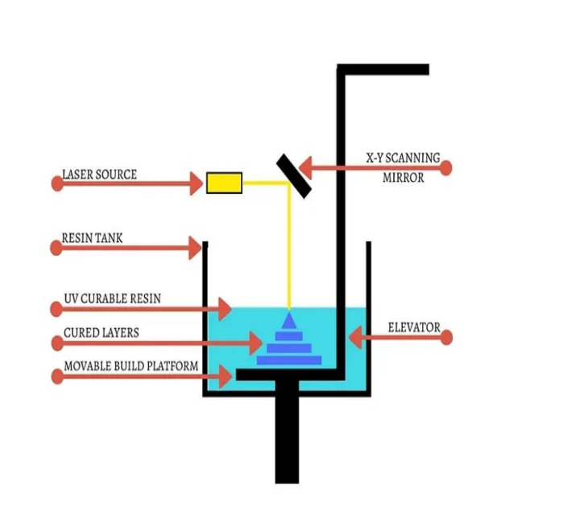
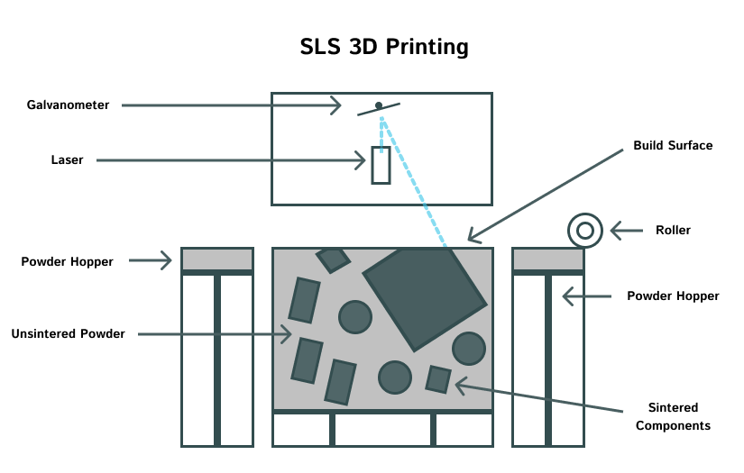
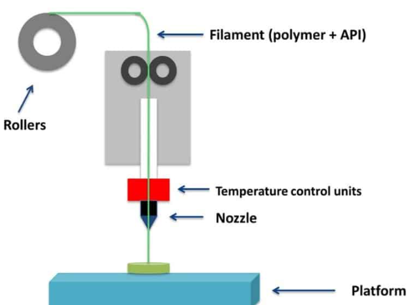
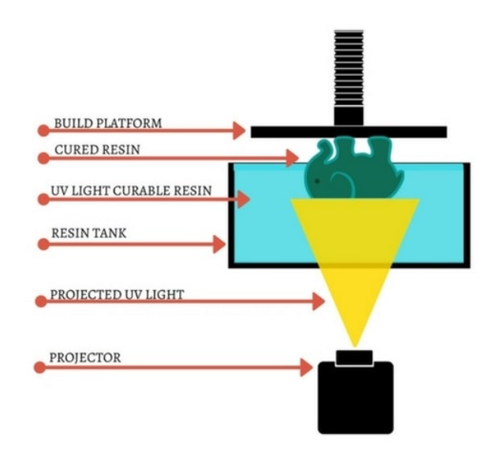
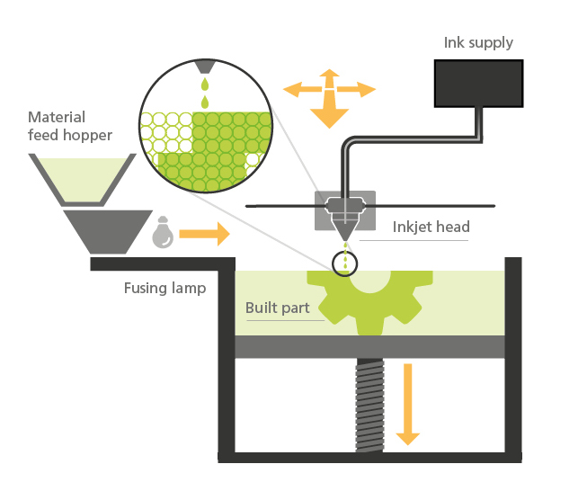
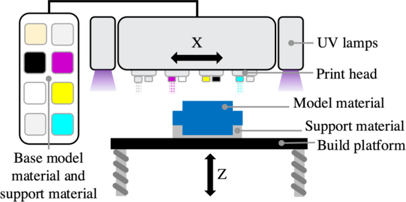

| Type | Uses | Description | |
|---|---|---|---|
| Stereolithography (SLA) | Concept Modeling, Dental Applications, Rapid Prototyping, Functional Prototyping, Short-run Production, Jewelry Prototyping and Casting | Stereolithography, or SLA, was the pioneering 3D printing technology, coming to life in the 1980s. Still a favorite among professionals, SLA 3D printers utilize a laser to harden liquid resin into plastic via photopolymerization. It's a process that has stood the test of time for creating precise, high-quality objects. |  |
| Selective Laser Sintering (SLS) | End-Use Parts, Functional Prototyping, Short-Run, bridge, or custome manufactring | Selective Laser Sintering (SLS) 3D printers leverage high-power lasers to sinter tiny polymer powder particles into a solid form. The unfused powder acts as a support during the process, eliminating the need for separate support structures. This makes SLS perfect for creating complex geometries like interior features, undercuts, thin walls, and negative features. The resulting parts boast impressive mechanical properties, similar in strength to injection-molded pieces. |  |
| Fused Deposition Modeling (FDM) | Basic proof-of-concept models, Simple Prototyping | Fused Deposition Modeling (FDM), or Fused Filament Fabrication (FFF), is the go-to 3D printing method for most consumers. These printers extrude thermoplastic filaments like ABS or PLA through a heated nozzle, melting the material and then building up the object layer by layer on a platform. Each layer is meticulously laid down until the whole part is formed. Simple but effective! |  |
| Digital Light Process (DLP) | Dental Appliances, Medical Devices, Footwear | DLP boasts faster print times than SLA because it exposes each layer simultaneously, rather than tracing the cross-section of an area with a laser. Common uses for both SLA and DLP include creating injection mold-type polymer models, jewelry, dental applications, and hearing aids. They excel in producing fine details and smooth surface finishes. However, their brittleness makes them unsuitable for mechanical parts. |  |
| Muli Jet Fusion (MJF) | Functional Prototypes, End-use parts, Medical applications, Automotive Parts, Mechanical Parts, Architectural Models, Jewelry, Production Tools, Spare Parts | Multi Jet Fusion (MJF) builds functional parts from nylon powder. Instead of using a laser to sinter the powder, MJF utilizes an inkjet array to apply fusing agents to the nylon powder bed. A heating element then passes over the bed to fuse each layer, resulting in more consistent mechanical properties and improved surface finish compared to SLS. Another perk of the MJF process is the accelerated build time, leading to lower production costs. |  |
| PolyJet | Prototyping and manufacturing parts with complex geometries, intricate details, and multiple colors | PolyJet printing does have a bit of a twist. It allows for the creation of parts with varying properties, such as different colors and materials. Designers often use this tech for prototyping elastomeric or over-molded parts. It’s quite the versatile tool for detailed and multi-material designs! |  |